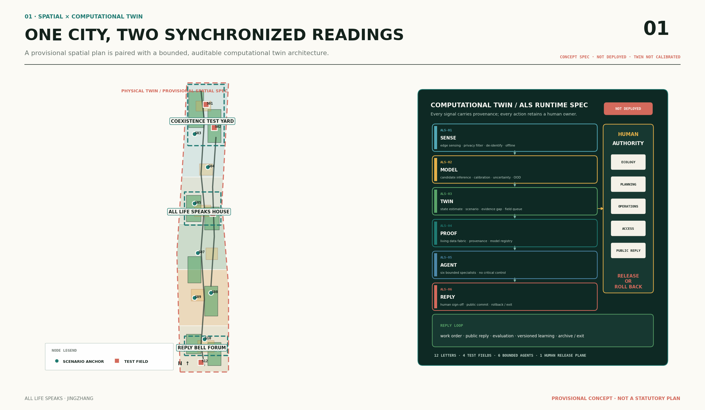
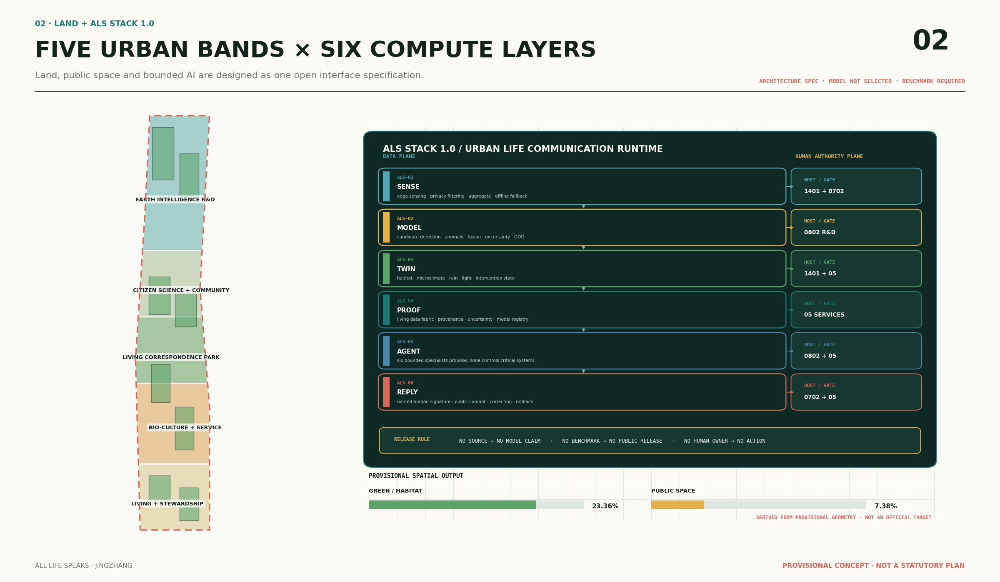
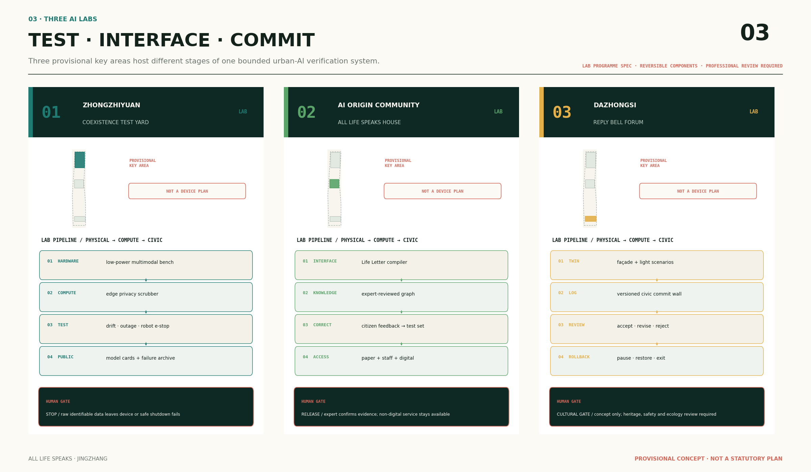
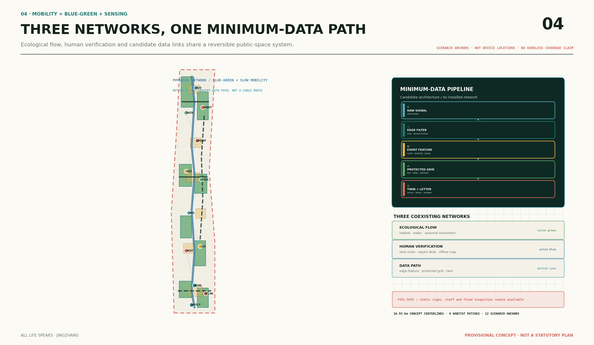
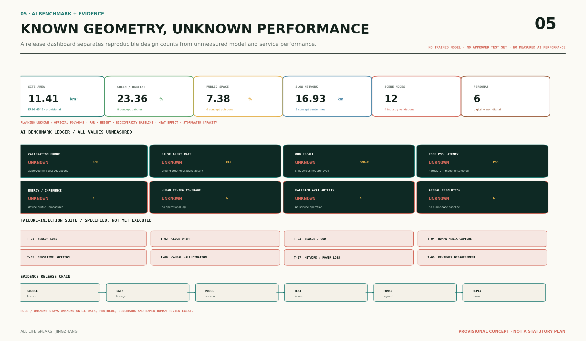

Sense
边缘感知、设备侧隐私过滤、去人化、聚合与断网降级
ALL LIFE SPEAKS / ALS STACK 1.0
京张多物种城市智能体与环境治理开放规范。
AI 不替物种发言。它把环境信号编译成有来源、有版本、有不确定性、有人工责任和可回滚状态的公共来信。
CONCEPT SPECNOT DEPLOYEDBENCHMARK REQUIRED
左侧是由临时空间数据派生的生命通信主脊；右侧是拟议的感知与端侧隐私、候选模型、状态孪生、证据织物、有界智能体和人工签署回复运行栈。所有边界均为 provisional，计算孪生尚未接入现场数据或校准。

边缘感知、设备侧隐私过滤、去人化、聚合与断网降级
多模态候选推理、校准、不确定性与 OOD；尚未选型
生境、微气候、雨水、照明与干预状态；尚未校准
生命数据织物、来源、版本、不确定性与模型注册
六类有界专业智能体提出建议，不控制关键系统
具名人工签署、公众 Commit、纠错、回滚或退出
架构已被描述，不等于系统已经部署；模型、硬件、接口、阈值和性能均需另行选择与验证。


多模态设备、端侧隐私、模型漂移、断网、机器人急停与失败注入。
Life Letter 编译器、知识图谱、公众纠错、专家标注和非数字服务。
照明与立面情景孪生、版本状态墙、接受/修改/拒绝/回滚记录。

图中节点是场景锚点，不是设备安装位置；青色点线是概念数据路径，不是通信管线或覆盖范围。建筑和道路仍仅表达可逆原型与连接意图。
{
"letter_id": "LETTER-XXX",
"signal_domain": "environmental",
"space_feature_id": "SCENE-XXX",
"model_family": "candidate_not_selected",
"model_version": null,
"confidence_status": "benchmark_required",
"ood_flag": "unknown",
"source_provenance": "required",
"human_reviewer_role": "named_domain_role",
"fallback_mode": "manual_or_fixed_rule",
"decision_status": "verification_required"
}AI 可以识别候选、发现异常、归纳证据和提出建议；不能审批规划、形成工程结论、诊断健康、预测治安、自动执法、自动关单或直接控制排水、消防、交通信号等关键系统。
SOURCEVERSIONOODHUMANFALLBACK
组织水与微气候时序异常和复核队列，不生成合规或健康结论。
组合树、鸟、虫、土和小兽候选信号，不公开敏感位置。
提出自然基础设施检查队列，不自动关单或控制关键设施。
检查来源、版本、OOD 和失败记录，不替专业人员背书。
只检索已登记公开资料，保留少数意见，不把草案当成规则。
合并已核验来信并暴露冲突，不能审批、执法、拨款或关单。
生态、规划、运维、无障碍与公众治理角色决定放行、修改、回滚或退出。

| Benchmark | 当前状态 | 缺失证据 |
|---|---|---|
| 校准误差、误报率、OOD | UNKNOWN / BENCHMARK REQUIRED | 已批准的现场数据集与标注协议 |
| 端侧延迟与单次能耗 | UNKNOWN / HARDWARE NOT SELECTED | 模型、芯片、功耗和断网测试 |
| 人工复核与非 AI 备用 | UNKNOWN / NO OPERATIONS LOG | 运行台账、服务时段与申诉记录 |
| 阶段 | 项目 | 放行条件 |
|---|---|---|
| 01 建立基线 | 边界复核、生态基线、树木和设施台账 | 来源、许可、采样方案、专业责任人齐备 |
| 02 可逆试验 | 共生试验庭、万物邮局、气候驿站、组件库 | 隐私、安全、无障碍、生态专业复核 |
| 03 评估退出 | 年度回信册、失败案例库、扩大/修改/暂停/退出建议 | 公众申诉、人工签署、证据可复算 |
agent.1 总体品牌agent.2 全球生态agent.3 场景治理agent.4 公空地标agent.5 文化叙事agent.6 年度运营
空间未知：官方 polygon、法定容积率/高度、生态基线、热暴露因果效果和海绵工程容量。AI 未知：模型校准、误报、OOD、延迟、能耗和实际服务绩效。
项目公告、Agent 任务书、临时边界说明、国土空间规划城市设计指南、城市绿地规划标准、无障碍设计规范、完整街道与防灾公园标准。
TreesSG/ENTS、GreenTwins、Urban ReLeaf、Array of Things、RESILIO、AMMOD、BirdNET、SlothBot。仅引用机制与事实，不复制素材或暗示合作。
临时边界只供内容表达；用地、建筑、道路、绿地、公共空间和分期均是概念设计。官方资料到位后须整体复算。